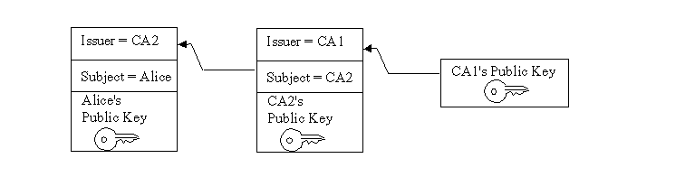

CRLDistributionPoints extension. For
backwards compatibility, it is disabled by default.
See Appendix B: The "SUN" Provider for more
information and instructions on how to enable it.
The JavaTM Certification Path API consists of classes and interfaces for handling certification paths (also known as "certificate chains"). A certification path is an ordered list of certificates. If a certification path meets certain validation rules, it may be used to securely establish the mapping of a public key to a subject.
This API defines interfaces and abstract classes for creating, building, and validating certification paths. Implementations may be plugged in using a provider-based interface. The API is based on the Cryptographic Service Provider architecture, described in the Java Cryptography Architecture Document.
The API also includes algorithm-specific classes for building and validating X.509 certification paths according to the PKIX standards. The PKIX standards are developed by the IETF PKIX working group.
This API is being reviewed using the Java Community ProcessSM program as JavaTM Specification Request (JSR) 000055. The API is included in the JavaTM 2 SDK, Standard Edition (J2SDK), v 1.4. Please refer to the JSR 055 Home Page for more information on the JSR and the latest status.
Acknowledgments
The author would like to thank the individuals who contributed to the Certification Path API and provided useful comments and technical advice. Special thanks to the members of the Sun Microsystems Laboratories team who designed and developed the Certification Path API which provided the basis of the work for the Java Community Process. This team includes Anne Anderson, Yassir Elley, Geoff Goodell, Steve Hanna, Sean Mullan, Radia Perlman, and Seth Proctor.The expert group helped improve and refine the API using the Java Community Process and includes the following members:
Maxine Erlund, Steve Hanna, Phil Rosenzweig and Bob Sproull of Sun Microsystems provided leadership and vision. The members of the Java Security, Networking and Naming Group of Sun Microsystems contributed invaluable comments and support, especially Sharon Liu, Jeff Nisewanger, Gary Ellison, and Andreas Sterbenz. Helpful comments and advice were received from many in the technical community, especially Mary Dageforde, Edward Dobner, Tom Gindin, Jan Luehe, David Kuehr-McLaren, Parag Salvi, Alexei Semidetnov, and Yanni Zhang.
- Peter Hesse, CygnaCom Solutions, An Entrust Technologies Company
- Sean Mullan, Sun Microsystems (Specification Lead)
- Anthony Nadalin, IBM
- Bob Naugle, Bluestone Software
- Hemma Prafullchandra, VeriSign
- Ming Yung, DSTC
Who Should Read This Document
This document is intended for two classes of experienced developers:
those who want to design secure applications that build or validate certification paths.
those who want to write a service provider implementation for building or validating certification paths.
Related Documentation
This document assumes you have already read the following documents (available online at http://java.sun.com/j2se/1.4/docs/guide/security/index.html):Introduction
Users of public key applications and systems must be confident that a subject's public key is genuine, i.e., that the associated private key is owned by the subject. Public key certificates are used to establish this trust. A public key (or identity) certificate is a binding of a public key to an identity, which is digitally signed by the private key of another entity, often called a Certification Authority (CA). We shall use the term CA to refer to an entity that signs a certificate for the remainder of this section.
If the user does not have a trusted copy of the public key of the CA that signed the subject's public key certificate, then another public key certificate vouching for the signing CA is required. This logic can be applied recursively, until a chain of certificates (or a certification path) is discovered from a trust anchor or a most-trusted CA to the target subject (commonly referred to as the end-entity). The most-trusted CA is usually specified by a certificate issued to a CA that the user directly trusts. In general, a certification path is an ordered list of certificates, usually comprised of the end-entity's public key certificate and zero or more additional certificates. A certification path typically has one or more encodings, allowing it to be safely transmitted across networks and to different operating system architectures.
Figure 1 illustrates a certification path from a most-trusted CA's public key (CA 1) to the target subject (Alice). The certification path establishes trust in Alice's public key through an intermediate CA named CA2.

Figure 1: Certification PathA certification path must be validated before it can be relied on to establish trust in a subject's public key. Validation can consist of various checks on the certificates contained in the certification path, such as verifying the signatures and checking that each certificate has not been revoked. The PKIX standards define an algorithm for validating certification paths consisting of X.509 certificates.
Often a user may not have a certification path from a most-trusted CA to the subject. Providing services to build or discover certification paths is an important feature of public key enabled systems. RFC 2587 defines an LDAP (Lightweight Directory Access Protocol) schema definition which facilitates the discovery of X.509 certification paths using the LDAP directory service protocol.
Building and validating certification paths is an important part of many standard security protocols such as SSL/TLS, S/MIME, and IPSEC. The JavaTM Certification Path API provides a set of classes and interfaces for developers who need to integrate this functionality into their applications. This API benefits two types of developers: those who need to write service provider implementations for a specific certification path building or validation algorithm; and those who need to access standard algorithms for creating, building, and validating certification paths in an implementation-independent manner.
The core classes of the Java
Certification Path API consist of interfaces and classes that support
certification path functionality in an algorithm- and implementation
-independent manner. The API also includes a set of algorithm-specific
classes for the PKIX standards that are discussed in the section
titled PKIX Classes. The API builds on and
extends the existing JavaTM 2 SDK,
Standard Edition (J2SDK) java.security.cert
package for handling certificates. The core classes can be broken up
into 4 class categories: Basic, Validation, Building, and Storage:
Basic Certification Path Classes
CertPath,
CertificateFactory,
CertPathParameters
Certification Path Validation Classes
CertPathValidator,
CertPathValidatorResult
Certification Path Building Classes
CertPathBuilder,
CertPathBuilderResult
Certificate/CRL Storage Classes
CertStore,
CertStoreParameters,
CertSelector, CRLSelector
The following sections describe the most commonly used methods of each class and interface. Usage examples for some of the classes are interspersed throughout the guide. The complete reference documentation for the relevant Certification Path API classes can be found in:
Most of the classes and interfaces in the CertPath API are not thread-safe. However, there are some exceptions which will be noted in this guide and the API specification. Multiple threads that need to access a single non-thread-safe object concurrently should synchronize amongst themselves and provide the necessary locking. Multiple threads each manipulating separate objects need not synchronize.
The basic certification path classes provide fundamental functionality for encoding and representing certification paths. The key basic class in the Java Certification Path API is CertPath, which encapsulates the universal aspects shared by all types of certification paths. An application uses an instance of the CertificateFactory class to create a CertPath object.
The CertPath class is an abstract class for certification paths. It defines the functionality shared by all certification path objects. Various certification path types can be implemented by subclassing the CertPath class, even though they may have different contents and ordering schemes. All CertPath objects are serializable, immutable and thread-safe and share the following characteristics:
A type
This corresponds
to the type of the certificates in the certification path, for
example: X.509. The type of a CertPath is obtained using
the method:
public String getType()
See Appendix A in the
Java Cryptography Architecture API Specification & Reference
for information about standard certificate types.
A list of certificates
The
getCertificates method returns the list of certificates in
the certification path:
public abstract List getCertificates()This method returns a List of zero or more java.security.cert.Certificate objects. The returned
List
and the Certificates
contained within it are immutable, in order to protect the contents
of the CertPath object.
The ordering of the certificates
returned depends on the type. By convention, the certificates in a
CertPath object of type X.509 are ordered starting with the
target certificate and ending with a certificate issued by the trust
anchor. That is, the issuer of one certificate is the subject of the
following one. The certificate representing the TrustAnchor
should not be included in the certification path. Unvalidated
X.509 CertPaths may not follow this convention. PKIX
CertPathValidators will
detect any departure from these conventions that cause the
certification path to be invalid and throw a
CertPathValidatorException.
One or more encodings
Each
CertPath object supports one
or more encodings. These are external encoded forms for the
certification path, used when a standard representation of the path
is needed outside the Java Virtual Machine (as when transmitting the
path over a network to some other party). Each path can be encoded
in a default format, the bytes of which are returned using the
method:
public abstract byte[] getEncoded()Alternatively, the getEncoded(String) method returns a specific supported encoding by specifying the encoding format as a String (ex: "PKCS7"). A list of standard encoding formats are defined in Appendix A.
public abstract byte[] getEncoded(String encoding)Also, the getEncodings method returns an iterator over the supported encoding format Strings (the default encoding format is returned first):
public abstract Iterator getEncodings()
All CertPath objects are also Serializable.
CertPath objects are resolved into an alternate
CertPathRep object during
serialization. This allows a CertPath object to be serialized
into an equivalent representation regardless of its underlying implementation.
CertPath objects are
generated from an encoded byte array or list of Certificates
using a CertificateFactory.
Alternatively, a CertPathBuilder
may be used to try to find a CertPath
from a most-trusted CA to a particular subject. Once a CertPath
object has been created, it may be validated by passing it to the
validate method of
CertPathValidator. Each of
these concepts are explained in more detail in subsequent sections.
The CertificateFactory
class is an engine
class that defines the functionality of a certificate factory.
In releases prior to J2SDK, v 1.4 it was used to generate
Certificate and CRL objects. It has been enhanced
in J2SDK, v 1.4 to also be used to generate certification path
(CertPath) objects.
A CertificateFactory should not be confused with a
CertPathBuilder. A CertPathBuilder
(discussed later) is used to discover or find a certification path
when one does not exist. In contrast, a CertificateFactory
is used when a certification path has already been discovered and the
caller needs to instantiate a CertPath object from its
contents which exist in a different form such as an encoded byte array
or an array of Certificates.
Creating a CertificateFactory Object
See the
CertificateFactorysection in the Java Cryptography Architecture for details on creating aCertificateFactoryobject.Generating CertPath Objects
A CertificateFactory instance generates CertPath objects from a
Listof Certificate objects or from anInputStreamthat contains the encoded form of aCertPath. Just like aCertPath, each CertificateFactory supports a default encoding format for certification paths (ex: PKCS#7). To generate aCertPathobject and initialize it with the data read from an input stream (in the default encoding format), use the generateCertPath method:public final CertPath generateCertPath(InputStream inStream)or from a particular encoding format:
public final CertPath generateCertPath(InputStream inStream, String encoding)To find out what encoding formats are supported, use the getCertPathEncodings method (the default encoding is returned first):
public final Iterator getCertPathEncodings()To generate a certification path object from a List of Certificate objects, use the following method:
public final CertPath generateCertPath(List certificates)A
CertificateFactoryalways returns CertPath objects that consist ofCertificates that are of the same type as the factory. For example, a CertificateFactory of type X.509 returns CertPath objects consisting of certificates that are an instance of java.security.cert.X509Certificate.The following code sample illustrates generating a certification path from a PKCS#7 encoded certificate reply stored in a file:
// open an input stream to the file FileInputStream fis = new FileInputStream(filename); // instantiate a CertificateFactory for X.509 CertificateFactory cf = CertificateFactory.getInstance("X.509"); // extract the certification path from // the PKCS7 SignedData structure CertPath cp = cf.generateCertPath(fis, "PKCS7"); // print each certificate in the path List certs = cp.getCertificates(); Iterator i = certs.iterator(); while (i.hasNext()) { X509Certificate cert = (X509Certificate) i.next(); System.out.println(cert); }Here's another code sample that fetches a certificate chain from aKeyStoreand converts it to aCertPathusing aCertificateFactory:// instantiate a KeyStore with type JKS KeyStore ks = KeyStore.getInstance("JKS"); // load the contents of the KeyStore ks.load(new FileInputStream("./keystore"), "password".toCharArray()); // fetch certificate chain stored with alias "sean" Certificate[] certArray = ks.getCertificateChain("sean"); // convert chain to a List List certList = Arrays.asList(certArray); // instantiate a CertificateFactory for X.509 CertificateFactory cf = CertificateFactory.getInstance("X.509"); // extract the certification path from // the List of Certificates CertPath cp = cf.generateCertPath(certList);
Note
that there is an existing method in CertificateFactory
named generateCertificates
that parses a sequence of Certificates.
For encodings consisting of multiple certificates, use
generateCertificates when you
want to parse a collection of possibly unrelated certificates.
Otherwise, use generateCertPath
when you want to generate a CertPath
and subsequently validate it with a CertPathValidator
(discussed later).
The CertPathParameters interface is a transparent
representation of the set of parameters used with a particular
certification path builder or validation algorithm. Its main purpose is to
group (and provide type safety for) all certification path parameter
specifications. The CertPathParameters interface extends the
Cloneable interface and defines a clone()
method that does not throw an exception. All concrete implementations of
this interface should implement and override the Object.clone()
method, if necessary. This allows applications to clone any
CertPathParameters object.
Objects implementing the CertPathParameters interface are passed
as arguments to methods of the
CertPathValidator and
CertPathBuilder classes. Typically,
a concrete implementation of the CertPathParameters interface
will hold a set of input parameters specific to a particular certification
path build or validation algorithm. For example, the
PKIXParameters class is an implementation of the
CertPathParameters interface that holds a set of
input parameters for the PKIX certification path validation
algorithm. One such parameter is the set of most-trusted CAs that the
caller trusts for anchoring the validation process. This parameter among
others is discussed in more detail in the section discussing the
PKIXParameters class.
The Java Certification Path API includes classes and interfaces for validating certification paths. An application uses an instance of the CertPathValidator class to validate a CertPath object. If successful, the result of the validation algorithm is returned in an object implementing the CertPathValidatorResult interface.
The CertPathValidator class is an engine class used to validate a certification path.
Creating a CertPathValidator Object
As with all engine classes, the way to get a CertPathValidator object for a particular validation algorithm is to call one of the getInstance static factory methods on the CertPathValidator class:
public static CertPathValidator getInstance(String algorithm) public static CertPathValidator getInstance(String algorithm, String provider) public static CertPathValidator getInstance(String algorithm, Provider provider)Thealgorithmparameter is the name of a certification path validation algorithm (for example, "PKIX"). StandardCertPathValidatoralgorithm names are listed in Appendix A.Validating a Certification Path
Once a CertPathValidator object is created, paths can be validated by calling the validate method, passing it the certification path to be validated and a set of algorithm-specific parameters:
public final CertPathValidatorResult validate(CertPath certPath, CertPathParameters params) throws CertPathValidatorException, InvalidAlgorithmParameterExceptionIf the validation algorithm is successful, the result is returned in an object implementing the CertPathValidatorResult interface. Otherwise, a CertPathValidatorException is thrown. The CertPathValidatorException contains methods that return the CertPath, and if relevant, the index of the certificate that caused the algorithm to fail and the root exception or cause of the failure.
Note that the CertPath and
CertPathParameterspassed to the validate method must be of a type that is supported by the validation algorithm. Otherwise, anInvalidAlgorithmParameterExceptionis thrown. For example, a CertPathValidator instance that implements the PKIX algorithm validates CertPath objects of type X.509 andCertPathParametersthat are an instance ofPKIXParameters.
The
CertPathValidatorResult interface is a transparent
representation of the successful result or output of a certification path
validation algorithm. Its main purpose is to group (and provide type
safety for) all validation results. Like the CertPathParameters
interface, CertPathValidatorResult
extends Cloneable and defines
a clone() method that does not
throw an exception. This allows applications to clone any
CertPathValidatorResult
object.
Objects
implementing the CertPathValidatorResult interface are
returned by the validate method of
CertPathValidator
(only when successful; otherwise a
CertPathValidatorException is thrown with a description of
the failure).
Typically, a concrete implementation of the CertPathValidatorResult
interface will hold a set of output parameters specific to a particular
certification path validation algorithm. For example, the
PKIXCertPathValidatorResult class is an implementation of the
CertPathValidatorResult interface which contains methods to
get the output parameters of the PKIX certification path validation algorithm.
One such parameter is the valid policy tree. This parameter among others is
discussed in more detail in the section discussing the
PKIXCertPathValidatorResult
class.
Here's a simplified code sample that illustrates how to create a
CertPathValidator and use it to validate a certification path.
The sample assumes that the CertPath and
CertPathParameters objects which are passed to the
validate method have been previously created; a more complete
example will be illustrated in the section describing the PKIX classes.
// create CertPathValidator that implements the "PKIX" algorithm
CertPathValidator cpv = null;
try {
cpv = CertPathValidator.getInstance("PKIX");
} catch (NoSuchAlgorithmException nsae) {
System.err.println(nsae);
System.exit(1);
}
// validate certification path ("cp") with specified parameters ("params")
try {
CertPathValidatorResult cpvResult = cpv.validate(cp, params);
} catch (InvalidAlgorithmParameterException iape) {
System.err.println("validation failed: " + iape);
System.exit(1);
} catch (CertPathValidatorException cpve) {
System.err.println("validation failed: " + cpve);
System.err.println("index of certificate that caused exception: "
+ cpve.getIndex());
System.exit(1);
}
The Java Certification Path API includes classes for building (or discovering) certification paths. An application uses an instance of the CertPathBuilder class to build a CertPath object. If successful, the result of the build is returned in an object implementing the CertPathBuilderResult interface.
The CertPathBuilder class is an engine class used to build a certification path.
Creating a CertPathBuilder Object
As with all engine classes, the way to get a CertPathBuilder object for a particular build algorithm is to call one of the getInstance static factory method on the CertPathBuilder class:
public static CertPathBuilder getInstance(String algorithm) public static CertPathBuilder getInstance(String algorithm, String provider) public static CertPathBuilder getInstance(String algorithm, Provider provider)Thealgorithmparameter is the name of a certification path builder algorithm (for example, "PKIX"). StandardCertPathBuilderalgorithm names are listed in Appendix A.Building a Certification Path
Once a CertPathBuilder object is created, paths can be constructed by calling the build method, passing it an algorithm-specific parameter specification:
public final CertPathBuilderResult build(CertPathParameters params) throws CertPathBuilderException, InvalidAlgorithmParameterExceptionIf the build algorithm is successful, the result is returned in an object implementing the CertPathBuilderResult interface. Otherwise, a CertPathBuilderException is thrown containing information about the failure; for example, the underlying exception (if any) and an error message.
Note that the
CertPathParameterspassed to the build method must be of a type that is supported by the build algorithm. Otherwise, anInvalidAlgorithmParameterExceptionis thrown.
The CertPathBuilderResult interface is a transparent representation of the result or output of a certification path builder algorithm. This interface contains a method to return the certification path that has been successfully built:
public CertPath getCertPath()
The purpose of
the CertPathBuilderResult interface is to group (and provide
type safety for) all build results. Like the
CertPathValidatorResult
interface, CertPathBuilderResult
extends Cloneable and defines
a clone() method that does not
throw an exception. This allows applications to clone any
CertPathBuilderResult object.
Objects implementing the CertPathBuilderResult interface are returned by the build method of CertPathBuilder.
Here's a simplified code sample that illustrates how to create a
CertPathBuilder and use it to build a certification path.
The sample assumes that the CertPathParameters object which is
passed to the build method has been previously created; a more
complete example will be illustrated in the section describing the PKIX
classes.
// create CertPathBuilder that implements the "PKIX" algorithm
CertPathBuilder cpb = null;
try {
cpb = CertPathBuilder.getInstance("PKIX");
} catch (NoSuchAlgorithmException nsae) {
System.err.println(nsae);
System.exit(1);
}
// build certification path using specified parameters ("params")
try {
CertPathBuilderResult cpbResult = cpb.build(params);
CertPath cp = cpbResult.getCertPath();
System.out.println("build passed, path contents: " + cp);
} catch (InvalidAlgorithmParameterException iape) {
System.err.println("build failed: " + iape);
System.exit(1);
} catch (CertPathBuilderException cpbe) {
System.err.println("build failed: " + cpbe);
System.exit(1);
}
The Java Certification Path API also
includes the CertStore class
for retrieving certificates and CRLs from a repository. This is
useful because it allows a caller to specify the repository a
CertPathValidator or CertPathBuilder implementation
should use to find certificates and CRLs (see the addCertStores
method of PKIXParameters for
an example).
A CertPathValidator implementation may use the CertStore
object that the caller specifies as a callback mechanism to fetch
CRLs for performing revocation checks. Similarly, a CertPathBuilder
may use the CertStore as a callback mechanism to fetch
certitificates and, if performing revocation checks, CRLs.
The CertStore class is an engine class used to provide the functionality of a certificate and certificate revocation list (CRL) repository. It can be used by CertPathBuilder and CertPathValidator implementations to find certificates and CRLs or as a general purpose certificate and CRL retrieval mechanism.
Unlike the
java.security.KeyStore class,
which provides access to a cache of private keys and trusted
certificates, a CertStore is
designed to provide access to a potentially vast repository of
untrusted certificates and CRLs. For example, an LDAP implementation
of CertStore provides access
to certificates and CRLs stored in one or more directories using the
LDAP protocol.
All public methods of CertStore objects are thread-safe. That is, multiple
threads may concurrently invoke these methods on a single
CertStore object (or more than one) with no ill effects.
This allows a CertPathBuilder to search for a CRL while
simultaneously searching for further certificates, for instance.
Creating a CertStore Object
As with all engine classes, the way to get a CertStore object for a particular repository type is to call one of the getInstance static factory methods on the CertStore class:
public static CertStore getInstance(String type, CertStoreParameters params) public static CertStore getInstance(String type, CertStoreParameters params, String provider) public static CertStore getInstance(String type, CertStoreParameters params, Provider provider)Thetypeparameter is the name of a certificate repository type (for example, "LDAP"). StandardCertStoretypes are listed in Appendix A.The initialization parameters (
params) are specific to the repository type. For example, the initialization parameters for a server-based repository may include the hostname and the port of the server. AnInvalidAlgorithmParameterExceptionis thrown if the parameters are invalid for thisCertStoretype. ThegetCertStoreParametersmethod returns theCertStoreParametersthat were used to initialize aCertStore:public final CertStoreParameters getCertStoreParameters()Retrieving Certificates
Once you have created a CertStore object, you can retrieve certificates from the repository using the getCertificates method. This method takes a CertSelector (discussed in more detail later) object as an argument, which specifies a set of selection criteria for determining which certificates should be returned:
public final Collection getCertificates(CertSelector selector) throws CertStoreExceptionThis method returns a Collection of java.security.cert.Certificate objects that satisfy the selection criteria. An empty Collection is returned if there are no matches. A
CertStoreExceptionis usually thrown if an unexpected error condition is encountered, such as a communications failure with a remote repository.For some CertStore implementations, it may not be feasible to search the entire repository for certificates or CRLs that match the specified selection criteria. In these instances, the CertStore implementation may use information that is specified in the selectors to locate certificates and CRLs. For instance, an LDAP CertStore may not search all entries in the directory. Instead, it may just search entries that are likely to contain the certificates it is looking for. If the CertSelector provided does not provide enough information for the LDAP CertStore to determine which entries it should look in, the LDAP CertStore may throw a CertStoreException.
Retrieving CRLs
You can also retrieve CRLs from the repository using the getCRLs method. This method takes a CRLSelector (discussed in more detail later) object as an argument, which specifies a set of selection criteria for determining which CRLs should be returned:
public final Collection getCRLs(CRLSelector selector) throws CertStoreExceptionThis method returns a Collection of java.security.cert.CRL objects that satisfy the selection criteria. An empty Collection is returned if there are no matches.
The
CertStoreParameters interface is a transparent
representation of the set of parameters used with a particular
CertStore.
Its main purpose is to
group (and provide type safety for) all certificate storage parameter
specifications. The CertStoreParameters interface extends the
Cloneable interface and defines a clone method that
does not throw an exception. Implementations of this interface should implement
and override the Object.clone() method, if necessary. This allows
applications to clone any CertStoreParameters object.
Objects implementing the CertStoreParameters interface are passed as arguments to the getInstance method of the CertStore class. Two classes implementing the CertStoreParameters interface are defined in this API: the LDAPCertStoreParameters and the CollectionCertStoreParameters classes.
The LDAPCertStoreParameters Class
The LDAPCertStoreParameters class is an implementation of the CertStoreParameters interface and holds a set of minimal initialization parameters (host and port number of the directory server) for retrieving certificates and CRLs from a
CertStoreof type LDAP.Please refer to the LDAPCertStoreParameters API documentation for more detailed information on this class.
The CollectionCertStoreParameters Class
The CollectionCertStoreParameters class is an implementation of the CertStoreParameters interface and holds a set of initialization parameters for retrieving certificates and CRLs from a
CertStoreof type Collection.Please refer to the CollectionCertStoreParameters API documentation for more detailed information on this class.
The CertSelector
and CRLSelector interfaces are a specification of the set of
criteria for selecting certificates and CRLs from a collection or
large group of certificates and CRLs. The interfaces group and
provide type safety for all selector specifications. Each selector interface
extends Cloneable and defines
a clone() method that does not
throw an exception. This allows applications to clone any
CertSelector or CRLSelector
object.
The CertSelector and CRLSelector interfaces each define a method named match. The match method takes a Certificate or CRL object as an argument and returns true if the object satisfies the selection criteria. Otherwise, it returns false. The match method for the CertSelector interface is defined as follows:
public boolean match(Certificate cert)
and for the CRLSelector interface:
public boolean match(CRL crl)
Typically, objects
implementing these interfaces are passed as parameters to the
getCertificates and getCRLs
methods of the CertStore
class. These methods return a Collection
of Certificates or CRLs
from the CertStore repository
that match the specified selection criteria. CertSelectors
may also be used to specify the validation constraints on a target
or end-entity certificate in a certification path (see for example, the
PKIXParameters.setTargetCertConstraints method.
The X509CertSelector class is an implementation of the CertSelector interface that defines a set of criteria for selecting X.509 certificates. An X509Certificate object must match all of the specified criteria to be selected by the match method. The selection criteria are designed to be used by a CertPathBuilder implementation to discover potential certificates as it builds an X.509 certification path.
For example, the setSubject
method of X509CertSelector allows a PKIX
CertPathBuilder to filter out X509Certificates
that do not match the issuer name of the preceding
X509Certificate in a partially completed chain.
By setting this and other criteria in an
X509CertSelector object, a
CertPathBuilder is able to
discard irrelevant certificates and more easily find an X.509
certification path that meets the requirements specified in the
CertPathParameters object.
Please refer to http://www.ietf.org/rfc/rfc3280.txt for definitions of the X.509 certificate extensions mentioned in this section.
Creating an X509CertSelector Object
An X509CertSelector object is created by calling the default constructor:
public X509CertSelector()No criteria are initially set (any
X509Certificatewill match).Setting Selection Criteria
The selection criteria allow a caller to match on different components of an X.509 certificate. A few of the methods for setting selection criteria are described here. Please refer to the X509CertSelector API documentation for details on the other methods.
The setIssuer methods set the issuer criterion:
public void setIssuer(String issuerDN) public void setIssuer(byte[] issuerDN)The specified distinguished name (in RFC 2253 String or ASN.1 DER encoded form) must match the issuer distinguished name in the certificate. If null, any issuer distinguished name will do.
Similarly, the setSubject methods set the subject criterion:
public void setSubject(String subjectDN) public void setSubject(byte[] subjectDN)The specified distinguished name (in RFC 2253 String or ASN.1 DER encoded form) must match the subject distinguished name in the certificate. If null, any subject distinguished name will do.
The setSerialNumber method sets the serialNumber criterion:
public void setSerialNumber(BigInteger serial)The specified serial number must match the certificate serial number in the certificate. If null, any certificate serial number will do.
The setAuthorityKeyIdentifier method sets the authorityKeyIdentifier criterion:
public void setAuthorityKeyIdentifier(byte[] authorityKeyID)The certificate must contain an Authority Key Identifier extension matching the specified value. If null, no check will be done on the authorityKeyIdentifier criterion.
The setCertificateValid method sets the certificateValid criterion:
public void setCertificateValid(Date certValid)The specified date must fall within the certificate validity period for the certificate. If null, any date is valid.
The setKeyUsage method sets the keyUsage criterion:
public void setKeyUsage(boolean[] keyUsage)The certificate's Key Usage Extension must allow the specified key usage values (those which are set to true). If null, no keyUsage check will be done.
Getting Selection Criteria
The current values for each of the selection criteria can be retrieved using an appropriate get method. Please refer to the X509CertSelector API documentation for further details on these methods.
Example
Here is an example of retrieving X.509 certificates from an LDAP CertStore with the X509CertSelector class.
First, we create the
LDAPCertStoreParametersobject that we will use to initialize theCertStoreobject with the hostname and port of the LDAP server:LDAPCertStoreParameters lcsp = new LDAPCertStoreParameters("ldap.sun.com", 389);Next, create the CertStore object, and pass it the
LDAPCertStoreParametersobject, as in the following statement:CertStore cs = CertStore.getInstance("LDAP", lcsp);This call creates a CertStore object that retrieves certificates and CRLs from an LDAP repository using the schema defined in RFC 2587.
The following block of code establishes an
X509CertSelectorto retrieve all unexpired (as of the current date and time) end-entity certificates issued to a particular subject with 1) a key usage that allows digital signatures, and 2) a subject alternative name with a specific email address:X509CertSelector xcs = new X509CertSelector(); // select only unexpired certificates xcs.setCertificateValid(new Date()); // select only certificates issued to // 'CN=alice, O=xyz, C=us' xcs.setSubject("CN=alice, O=xyz, C=us"); // select only end-entity certificates xcs.setBasicConstraints(-2); // select only certificates with a digitalSignature // keyUsage bit set (set the first entry in the // boolean array to true) boolean[] keyUsage = {true}; xcs.setKeyUsage(keyUsage); // select only certificates with a subjectAltName of // 'alice@xyz.com' (1 is the integer value of // an RFC822Name) xcs.addSubjectAlternativeName(1, "alice@xyz.com");Then we pass the selector to the getCertificates method of our CertStore object that we previously created:
Collection certs = cs.getCertificates(xcs);A PKIX
CertPathBuildermay use similar code to help discover and sort through potential certificates by discarding those that do not meet validation constraints or other criteria.
The X509CRLSelector class is an implementation of the CRLSelector interface that defines a set of criteria for selecting X.509 CRLs. An X509CRL object must match all of the specified criteria to be selected by the match method. The selection criteria are designed to be useful to a CertPathValidator or CertPathBuilder implementation that must retrieve CRLs from a repository to check the revocation status of certificates in an X.509 certification path.
For example, the
setDateAndTime method of
X509CRLSelector allows a PKIX
CertPathValidator to filter
out X509CRLs that have been
issued after or expire before the time indicated. By setting this and
other criteria in an X509CRLSelector
object, it allows the CertPathValidator
to discard irrelevant CRLs and more easily check if a certificate
has been revoked.
Please refer to http://www.ietf.org/rfc/rfc3280.txt for definitions of the X.509 CRL fields and extensions mentioned in this section.
Creating an X509CRLSelector Object
An X509CRLSelector object is created by calling the default constructor:
public X509CRLSelector()No criteria are initially set (any
X509CRLwill match).Setting Selection Criteria
The selection criteria allow a caller to match on different components of an X.509 CRL. Most of the methods for setting selection criteria are described here. Please refer to the X509CRLSelector API documentation for details on the remaining methods.
The setIssuerNames method sets the issuerNames criterion:
public void setIssuerNames(Collection names)The issuer distinguished name in the CRL must match at least one of the specified distinguished names. Each entry of the names argument is either a String or a byte array (representing the name, in RFC 2253 or ASN.1 DER encoded form, respectively). If null, any issuer distinguished name will do.
The setMinCRLNumber and setMaxCRLNumber methods set the minCRLNumber and maxCRLNumber criterion:
public void setMinCRLNumber(BigInteger minCRL) public void setMaxCRLNumber(BigInteger maxCRL)The CRL must have a CRL Number extension whose value is greater than or equal to the specified value if the setMinCRLNumber method is called, and less than or equal to the specified value if the setMaxCRLNumber method is called. If the value passed to one of these methods is null, the corresponding check is not done.
The setDateAndTime method sets the dateAndTime criterion:
public void setDateAndTime(Date dateAndTime)The specified date must be equal to or later than the value of the thisUpdate component of the CRL and earlier than the value of the nextUpdate component. If null, no dateAndTime check will be done.
The setCertificateChecking method sets the certificate whose revocation status is being checked:
public void setCertificateChecking(X509Certificate cert)This is not a criterion. Rather, it is optional information that may help a
CertStorefind CRLs that would be relevant when checking revocation for the specified certificate. If null is specified, then no such optional information is provided. An application should always call this method when checking revocation for a particular certificate, as it may provide theCertStorewith more information for finding the correct CRLs and filtering out irrelevant ones.Getting Selection Criteria
The current values for each of the selection criteria can be retrieved using an appropriate get method. Please refer to the X509CRLSelector API documentation for further details on these methods.
Example
Creating an X509CRLSelector to retrieve CRLs from an LDAP repository is similar to the X509CertSelector example. Suppose we want to retrieve all current (as of the current date and time) CRLs issued by a specific CA and with a minimum CRL number. First, we create an X509CRLSelector object and call the appropriate methods to set the selection criteria:
X509CRLSelector xcrls = new X509CRLSelector(); // select CRLs satisfying current date and time xcrls.setDateAndTime(new Date()); // select CRLs issued by 'O=xyz, C=us' xcrls.addIssuerName("O=xyz, C=us"); // select only CRLs with a CRL number at least '2' xcrls.setMinCRLNumber(new BigInteger("2"));Then we pass the selector to the getCRLs method of our CertStore object (created in the X509CertSelector example):
Collection crls = cs.getCRLs(xcrls);
The Java Certification Path API also includes a set of algorithm-specific classes modelled for use with the PKIX certification path validation algorithm defined in RFC 3280: Public Key Infrastructure Certificate and Certificate Revocation List (CRL) Profile.
The TrustAnchor Class
This class represents a "most-trusted CA", which is used as a trust anchor for validating X.509 certification paths. A most-trusted CA includes the public key of the CA, the CA's name, and any constraints upon the set of paths which may be validated using this key. These parameters can be specified in the form of a trusted
X509Certificateor as individual parameters.All
TrustAnchorobjects are immutable and thread-safe. That is, multiple threads may concurrently invoke the methods defined in this class on a singleTrustAnchorobject (or more than one) with no ill effects. RequiringTrustAnchorobjects to be immutable and thread-safe allows them to be passed around to various pieces of code without worrying about coordinating access.Note that although this class is described as a PKIX class it may be used with other X.509 certification path validation algorithms.
Creating a TrustAnchor Object
To instantiate a
TrustAnchorobject, a caller must specify "the most-trusted CA" as a trustedX509Certificateor public key and distinguished name pair. The caller may also optionally specify name constraints that are applied to the trust anchor by the validation algorithm during initialization. Note that support for name constraints on trust anchors is not required by the PKIX algorithm, therefore a PKIXCertPathValidatororCertPathBuildermay choose not to support this parameter and instead throw an exception. Use one of the following constructors to create aTrustAnchorobject:public TrustAnchor(X509Certificate trustedCert, byte[] nameConstraints) public TrustAnchor(String caName, PublicKey pubKey, byte[] nameConstraints)The
nameConstraintsparameter is specifed as a byte array containing the ASN.1 DER encoding of a NameConstraints extension. AnIllegalArgumentExceptionis thrown if the name constraints cannot be decoded (are not formatted correctly).Getting Parameter Values
Each of the parameters can be retrieved using a corresponding get method:
public final X509Certificate getTrustedCert() public final String getCAName() public final PublicKey getCAPublicKey() public final byte[] getNameConstraints()Note that thegetTrustedCertmethod returnsnullif the trust anchor was specified as a public key and name pair. Likewise, thegetCANameandgetCAPublicKeymethods returnnullif the trust anchor was specified as anX509Certificate.The PKIXParameters Class
This class (which implements the CertPathParameters interface) specifies the set of input parameters defined by the PKIX certification path validation algorithm. It also includes a few additional useful parameters.
An X.509
CertPathobject and a PKIXParameters object are passed as arguments to the validate method of a CertPathValidator instance implementing the PKIX algorithm. TheCertPathValidatoruses the parameters to initialize the PKIX certification path validation algorithm.Creating a PKIXParameters Object
To instantiate a
PKIXParametersobject, a caller must specify "the most-trusted CA(s)" as defined by the PKIX validation algorithm. The most-trusted CAs can be specified using one of two constructors:public PKIXParameters(Set trustAnchors) throws InvalidAlgorithmParameterException public PKIXParameters(KeyStore keystore) throws KeyStoreException, InvalidAlgorithmParameterExceptionThe first constructor allows the caller to specify the most-trusted CAs as a
SetofTrustAnchorobjects. Alternatively, a caller can use the second constructor and specify aKeyStoreinstance containing trusted certificate entries, each of which will be considered as a most-trusted CA.Setting Parameter Values
Once a PKIXParameters object has been created, a caller can set (or replace the current value of) various parameters. A few of the methods for setting parameters are described here. Please refer to the PKIXParameters API documentation for details on the other methods.
The setInitialPolicies method sets the initial policy identifiers, as specified by the PKIX validation algorithm. The elements of the Set are object identifiers (OIDs) represented as a String. If the
initialPoliciesparameter is null or not set, any policy is acceptable:public void setInitialPolicies(Set initialPolicies)The setDate method sets the time for which the validity of the path should be determined. If the date parameter is not set or is null, the current date is used:
public void setDate(Date date)The setPolicyMappingInhibited method sets the value of the policy mapping inhibited flag. The default value for the flag, if not specified, is false:
public void setPolicyMappingInhibited(boolean val)The setExplicitPolicyRequired method sets the value of the explicit policy required flag. The default value for the flag, if not specified, is false:
public void setExplicitPolicyRequired(boolean val)The setAnyPolicyInhibited method sets the value of the any policy inhibited flag. The default value for the flag, if not specified, is false:
public void setAnyPolicyInhibited(boolean val)The setTargetCertConstraints method allows the caller to set constraints on the target or end-entity certificate. For example, the caller can specify that the target certificate must contain a specific subject name. The constraints are specified as a
CertSelectorobject. If theselectorparameter is null or not set, no constraints are defined on the target certificate:public void setTargetCertConstraints(CertSelector selector)The setCertStores method allows a caller to specify a
Listof CertStore objects that will be used by a PKIX implementation of CertPathValidator to find CRLs for path validation. This provides an extensible mechanism for specifying where to locate CRLs. The setCertStores method takes aListof CertStore objects as a parameter. The first CertStores in the list may be preferred to those that appear later.public void setCertStores(List stores)The setCertPathCheckers method allows a caller to extend the PKIX validation algorithm by creating implementation-specific certification path checkers. For example, this mechanism can be used to process private certificate extensions. The setCertPathCheckers method takes a list of PKIXCertPathChecker (discussed later) objects as a parameter:
public void setCertPathCheckers(List checkers)The setRevocationEnabled method allows a caller to disable revocation checking. Revocation checking is enabled by default, since it is a required check of the PKIX validation algorithm. However, PKIX does not define how revocation should be checked. An implementation may use CRLs or OCSP, for example. This method allows the caller to disable the implementation's default revocation checking mechanism if it is not appropriate. A different revocation checking mechanism can then be specified by calling the setCertPathCheckers method, and passing it a
PKIXCertPathCheckerthat implements the alternate mechanism.public void setRevocationEnabled(boolean val)The setPolicyQualifiersRejected method allows a caller to enable or disable policy qualifier processing. When a PKIXParameters object is created, this flag is set to true. This setting reflects the most common (and simplest) strategy for processing policy qualifiers. Applications that want to use a more sophisticated policy must set this flag to false.
public void setPolicyQualifiersRejected(boolean qualifiersRejected)Getting Parameter Values
The current values for each of the parameters can be retrieved using an appropriate get method. Please refer to the PKIXParameters API documentation for further details on these methods.
The PKIXCertPathValidatorResult Class
This class (which implements the CertPathValidatorResult interface) represents the result of the PKIX certification path validation algorithm. It holds the valid policy tree and subject public key resulting from the validation algorithm, and includes methods (
getPolicyTree()andgetPublicKey()) for returning them. Instances of PKIXCertPathValidatorResult are returned by the validate method of CertPathValidator objects implementing the PKIX algorithm.Please refer to the PKIXCertPathValidatorResult API documentation for more detailed information on this class.
The PolicyNode Interface and PolicyQualifierInfo Class
The PKIX validation algorithm defines several outputs related to certificate policy processing. Most applications will not need to use these outputs, but all providers that implement the PKIX validation or building algorithm must support them.
The
PolicyNodeinterface represents a node of a valid policy tree resulting from a successful execution of the PKIX certification path validation. An application can obtain the root of a valid policy tree using thegetPolicyTreemethod ofPKIXCertPathValidatorResult. Policy Trees are discussed in more detail in the PKIX Certificate and CRL Profile.The
getPolicyQualifiersmethod ofPolicyNodereturns aSetofPolicyQualifierInfoobjects, each of which represents a policy qualifier contained in the Certificate Policies extension of the relevant certificate that this policy applies to.Most applications will not need to examine the valid policy tree and policy qualifiers. They can achieve their policy processing goals by setting the policy-related parameters in
PKIXParameters. However, the valid policy tree is available for more sophisticated applications, especially those that process policy qualifiers.Please refer to the
PolicyNodeandPolicyQualifierInfoAPI documentation for more detailed information on these classes.Example of Validating a Certification Path using the PKIX algorithm
This is an example of validating a certification path with the PKIX validation algorithm. The example ignores most of the exception handling and assumes that the certification path and public key of the trust anchor have already been created.
First, create the CertPathValidator, as in the following line:
CertPathValidator cpv = CertPathValidator.getInstance("PKIX");The next step is to create a TrustAnchor object. This will be used as an anchor for validating the certification path. In this example, the most-trusted CA is specified as a public key and name (name constraints are not applied and are specified as
null):TrustAnchor anchor = new TrustAnchor("O=xyz,C=us", pubkey, null);The next step is to create a PKIXParameters object. This will be used to populate the parameters used by the PKIX algorithm. In this example, we pass to the constructor a
Setcontaining a single element - theTrustAnchorwe created in the previous step:PKIXParameters params = new PKIXParameters(Collections.singleton(anchor));Next, we populate the parameters object with constraints or other parameters used by the validation algorithm. In this example, we enable the explicitPolicyRequired flag and specify a set of initial policy OIDs (the contents of the set are not shown):
// set other PKIX parameters here params.setExplicitPolicyRequired(true); params.setInitialPolicies(policyIds);The final step is to validate the certification path using the input parameter set we have created:
try { PKIXCertPathValidatorResult result = (PKIXCertPathValidatorResult) cpv.validate(certPath, params); PolicyNode policyTree = result.getPolicyTree(); PublicKey subjectPublicKey = result.getPublicKey(); } catch (CertPathValidatorException cpve) { System.out.println("Validation failure, cert[" + cpve.getIndex() + "] :" + cpve.getMessage()); }If the validation algorithm is successful, the policy tree and subject public key resulting from the validation algorithm are obtained using the
getPolicyTreeandgetPublicKeymethods ofPKIXCertPathValidatorResult.Otherwise, a CertPathValidatorException is thrown and the caller can catch the exception and print some details about the failure, such as the error message and the index of the certificate that caused the failure.
The PKIXBuilderParameters Class
This class (which extends the PKIXParameters class) specifies the set of parameters to be used with CertPathBuilders that build certification paths validated against the PKIX certification path validation algorithm.
A PKIXBuilderParameters object is passed as an argument to the build method of a CertPathBuilder instance implementing the PKIX algorithm. All PKIX CertPathBuilders must return certification paths which have been validated according to the PKIX certification path validation algorithm.
Please note that the mechanism that a PKIX
CertPathBuilderuses to validate a constructed path is an implementation detail. For example, an implementation might attempt to first build a path with minimal validation and then fully validate it using an instance of a PKIXCertPathValidator, whereas a more efficient implementation may validate more of the path as it is building it, and backtrack to previous stages if it encounters validation failures or dead-ends.Creating a PKIXBuilderParameters Object
Creating a PKIXBuilderParameters object is similar to creating a PKIXParameters object. However, a caller must specify constraints on the target or end-entity certificate when creating a PKIXBuilderParameters object. These constraints should provide the
CertPathBuilderwith enough information to find the target certificate. The constraints are specified as aCertSelectorobject. Use one of the following constructors to create a PKIXBuilderParameters object:public PKIXBuilderParameters(Set trustAnchors, CertSelector targetConstraints) throws InvalidAlgorithmParameterException public PKIXBuilderParameters(KeyStore keystore, CertSelector targetConstraints) throws KeyStoreException, InvalidAlgorithmParameterExceptionGetting/Setting Parameter Values
The PKIXBuilderParameters class inherits all of the parameters that can be set in the PKIXParameters class. In addition, the setMaxPathLength method can be called to place a limit on the maximum number of certificates in a certification path:
public void setMaxPathLength(int maxPathLength)The maxPathLength parameter specifies the maximum number of non-self-issued intermediate certificates that may exist in a certification path. A CertPathBuilder instance implementing the PKIX algorithm must not build paths longer than the length specified. If the value is 0, the path can only contain a single certificate. If the value is -1, the path length is unconstrained (i.e., there is no maximum). The default maximum path length, if not specified, is 5. This method is useful to prevent the
CertPathBuilderfrom spending resources and time constructing long paths that may or may not meet the caller's requirements.If any of the CA certificates in the path contain a Basic Constraints extension, the value of the pathLenConstraint component of the extension overrides the value of the maxPathLength parameter whenever the result is a certification path of smaller length. There is also a corresponding
getMaxPathLengthmethod for retrieving this parameter:public int getMaxPathLength()Also, the setCertStores method (inherited from the
PKIXParametersclass) is typically used by a PKIX implementation of CertPathBuilder to find Certificates for path construction as well as finding CRLs for path validation. This provides an extensible mechanism for specifying where to locate Certificates and CRLs.The PKIXCertPathBuilderResult Class
This class (which extends the PKIXCertPathValidatorResult class and implements the CertPathBuilderResult interface) represents the successful result of the PKIX certification path construction algorithm. Instances of PKIXCertPathBuilderResult are returned by the build method of CertPathBuilder objects implementing the PKIX algorithm.
The getCertPath method of a PKIXCertPathBuilderResult instance always returns a CertPath object validated using the PKIX certification path validation algorithm. The returned CertPath object does not include the most-trusted CA certificate that may have been used to anchor the path. Instead, use the
getTrustAnchormethod to get theCertificateof the most-trusted CA.Please refer to the PKIXCertPathBuilderResult API documentation for more detailed information on this class.
Example of Building a Certification Path using the PKIX algorithm
This is an example of of building a certification path validated against the PKIX algorithm. Some details have been left out, such as exception handling, and the creation of the trust anchors and certificates for populating the
CertStore.First, create the CertPathBuilder, as in the following example:
CertPathBuilder cpb = CertPathBuilder.getInstance("PKIX");This call creates a CertPathBuilder object that returns paths validated against the PKIX algorithm.
The next step is to create a PKIXBuilderParameters object. This will be used to populate the PKIX parameters used by the CertPathBuilder:
// Create parameters object, passing it a Set of // trust anchors for anchoring the path // and a target subject DN. X509CertSelector targetConstraints = new X509CertSelector(); targetConstraints.setSubject("CN=alice,O=xyz,C=us"); PKIXBuilderParameters params = new PKIXBuilderParameters(trustAnchors, targetConstraints);The next step is to specify the CertStore that the CertPathBuilder will use to look for certificates and CRLs. For this example, we will populate a Collection CertStore with the certificates and CRLs:
CollectionCertStoreParameters ccsp = new CollectionCertStoreParameters(certsAndCrls); CertStore store = CertStore.getInstance("Collection", ccsp); params.addCertStore(store);The next step is to build the certification path using the input parameter set we have created:
try { PKIXCertPathBuilderResult result = (PKIXCertPathBuilderResult) cpb.build(params); CertPath cp = result.getCertPath(); } catch (CertPathBuilderException cpbe) { System.out.println("build failed: " + cpbe.getMessage()); }If the
CertPathBuildercannot build a path that meets the supplied parameters it will throw a CertPathBuilderException. Otherwise, the validated certification path can be obtained from the PKIXCertPathBuilderResult using thegetCertPathmethod.The PKIXCertPathChecker Class
This section describes a powerful class that allows a user to extend a PKIX CertPathValidator or CertPathBuilder implementation. This is an advanced feature that most users will not need to understand. However, anyone implementing a PKIX service provider should read this section.
The PKIXCertPathChecker class is an abstract class that executes one or more checks on an X.509 certificate. Developers should create concrete implementations of the PKIXCertPathChecker class when it is necessary to dynamically extend a PKIX CertPathValidator or CertPathBuilder implementation at runtime. The following are a few examples of when a PKIXCertPathChecker implementation is useful:
If the revocation mechanism supplied by a PKIX CertPathValidator or CertPathBuilder implementation is not adequate. For example, a developer might implement a PKIXCertPathChecker that uses OCSP ( RFC 2560) to check that certificates have not been revoked.
If the user wants to recognize certificates containing a critical private extension. Since the extension is private, it will not be recognized by the PKIX CertPathValidator or CertPathBuilder implementation and a CertPathValidatorException will be thrown. In this case, a developer can implement a PKIXCertPathChecker that recognizes and processes the critical private extension.
If the developer wants to record information about each certificate processed for debugging or display purposes.
If the user wants to reject certificates with certain policy qualifiers.
The setCertPathCheckers method of the PKIXParameters class allows a user to pass a
Listof PKIXCertPathChecker objects to a PKIX CertPathValidator or CertPathBuilder implementation. Each of the PKIXCertPathChecker objects will be called in turn, for each certificate processed by the PKIX CertPathValidator or CertPathBuilder implementation.Creating and using a PKIXCertPathChecker Object
The PKIXCertPathChecker class does not have a public constructor. This is intentional, since creating an instance of PKIXCertPathChecker is an implementation-specific issue. For example, the constructor for a PKIXCertPathChecker implementation that uses OCSP to check a certificate's revocation status may require the hostname and port of the OCSP server:
PKIXCertPathChecker checker = new OCSPChecker("ocsp.sun.com", 1321);Once the checker has been instantiated, it can be added as a parameter using the addCertPathChecker method of the PKIXParameters class:
params.addCertPathChecker(checker);Alternatively, a List of checkers can be added using the setCertPathCheckers method of the PKIXParameters class.
Implementing a PKIXCertPathChecker Object
The PKIXCertPathChecker class is abstract. It has four methods (check, getSupportedExtensions, init, and isForwardCheckingSupported) that all concrete subclasses must implement.
Implementing a PKIXCertPathChecker may be trivial or complex. A PKIXCertPathChecker implementation can be stateless or stateful. A stateless implementation does not maintain state between successive calls of the check method. For example, a PKIXCertPathChecker that checks that each certificate contains a particular policy qualifier is stateless. In contrast, a stateful implementation does maintain state between successive calls of the check method. The check method of a stateful implementation usually depends on the contents of prior certificates in the certification path. For example, a PKIXCertPathChecker that processes the NameConstraints extension is stateful.
Also, the order in which the certificates processed by a service provider implementation are presented (passed) to a PKIXCertPathChecker is very important, especially if the implementation is stateful. Depending on the algorithm used by the service provider, the certificates may be presented in reverse or forward order. A reverse ordering means that the certificates are ordered from the most trusted CA (if present) to the target subject, whereas a forward ordering means that the certificates are ordered from the target subject to the most trusted CA. The order must be made known to the PKIXCertPathChecker implementation, so that it knows how to process consecutive certificates.
Initializing a PKIXCertPathChecker Object
The init method initializes the internal state of the checker:
public abstract void init(boolean forward)All stateful implementations should clear or initialize any internal state in the checker. This prevents a service provider implementation from calling a checker that is in an uninitialized state. It also allows stateful checkers to be reused in subsequent operations without reinstantiating them. The forward parameter indicates the order of the certificates presented to the PKIXCertPathChecker. If forward is true, the certificates are presented from target to trust anchor; if false, from trust anchor to target.
Forward Checking
The isForwardCheckingSupported method returns a boolean that indicates if the PKIXCertPathChecker supports forward checking:
public abstract boolean isForwardCheckingSupported()All PKIXCertPathChecker implementations must support reverse checking. A PKIXCertPathChecker implementation may support forward checking.
Supporting forward checking improves the efficiency of
CertPathBuilders that build forward, since it allows paths to be checked as they are built. However, some statefulPKIXCertPathCheckers may find it difficult or impossible to support forward checking.Supported Extensions
The getSupportedExtensions method returns an immutable Set of OID Strings for the X.509 extensions that the PKIXCertPathChecker implementation supports (i.e., recognizes, is able to process):
public abstract Set getSupportedExtensions()The method should return null if no extensions are processed. All implementations should return the Set of OID Strings that the check method may process.
A
CertPathBuildercan use this information to identify certificates with unrecognized critical extensions, even when performing a forward build with aPKIXCertPathCheckerthat does not support forward checking.Executing the Check
The following method executes a check on the certificate:
public abstract void check(Certificate cert, Collection unresolvedCritExts) throws CertPathValidatorExceptionThe unresolvedCritExts parameter contains a collection of OIDs as Strings. These OIDs represent the set of critical extensions in the certificate that have not yet been resolved by the certification path validation algorithm. Concrete implementations of the check method should remove any critical extensions that it processes from the unresolvedCritExts parameter.
If the certificate does not pass the check(s), a CertPathValidatorException should be thrown.
Cloning a PKIXCertPathChecker
The PKIXCertPathChecker class implements the Cloneable interface. All stateful PKIXCertPathChecker implementations must override the clone method if necessary. The default implementation of the clone method calls the Object.clone method, which performs a simple clone by copying all fields of the original object to the new object. A stateless implementation should not override the clone method. However, all stateful implementations must ensure that the default clone method is correct, and override it if necessary. For example, a PKIXCertPathChecker that stores state in an array must override the clone method to make a copy of the array, rather than just a reference to the array.
The reason that PKIXCertPathChecker objects are Cloneable is to allow a PKIX CertPathBuilder implementation to efficiently backtrack and try another path when a potential certification path reaches a dead end or point of failure. In this case, the implementation is able to restore prior path validation states by restoring the cloned objects.
Example
This is an example of a stateless PKIXCertPathChecker implementation. It checks if a private extension exists in a certificate and processes it according to some rules.
import java.security.cert.Certificate; import java.security.cert.X509Certificate; import java.util.Collection; import java.util.Collections; import java.util.Set; import java.security.cert.PKIXCertPathChecker; import java.security.cert.CertPathValidatorException; public class MyChecker extends PKIXCertPathChecker { private static Set supportedExtensions = Collections.singleton("2.16.840.1.113730.1.1"); /* * Initialize checker */ public void init(boolean forward) throws CertPathValidatorException { // nothing to initialize } public Set getSupportedExtensions() { return supportedExtensions; } public boolean isForwardCheckingSupported() { return true; } /* * Check certificate for presence of Netscape's * private extension * with OID "2.16.840.1.113730.1.1" */ public void check(Certificate cert, Collection unresolvedCritExts) throws CertPathValidatorException { X509Certificate xcert = (X509Certificate) cert; byte[] ext = xcert.getExtensionValue("2.16.840.1.113730.1.1"); if (ext == null) return; // // process private extension according to some // rules - if check fails, throw a // CertPathValidatorException ... // {insert code here} // remove extension from collection of unresolved // extensions (if it exists) if (unresolvedCritExts != null) unresolvedCritExts.remove("2.16.840.1.113730.1.1"); } }How a PKIX Service Provider implementation should use a PKIXCertPathChecker
Each PKIXCertPathChecker object must be initialized by a service provider implementation before commencing the build or validation algorithm, for example:
List checkers = params.getCertPathCheckers(); ListIterator li = checkers.listIterator(); while (li.hasNext()) { PKIXCertPathChecker checker = (PKIXCertPathChecker) li.next(); checker.init(false); }For each certificate that it validates, the service provider implementation must call the check method of each PKIXCertPathChecker object in turn, passing it the certificate and any remaining unresolved critical extensions:
ListIterator li = checkers.listIterator(); while (li.hasNext()) { PKIXCertPathChecker checker = (PKIXCertPathChecker) li.next(); checker.check(cert, unresolvedCritExts); }If any of the checks throw a CertPathValidatorException, a
CertPathValidatorimplementation should terminate the validation procedure. However, a CertPathBuilder implementation may simply log the failure and continue to search for other potential paths. If all of the checks are successful, the service provider implementation should check that all critical extensions have been resolved and if not, consider the validation to have failed. For example:if (unresolvedCritExts != null && !unresolvedCritExts.isEmpty()) { // note that a CertPathBuilder may have an enclosing // try block to catch the exception below and continue on error throw new CertPathValidatorException ("Unrecognized Critical Extension"); }As discussed in the previous section, a CertPathBuilder implementation may need to backtrack when a potential certification path reaches a dead end or point of failure. Backtracking in this context implies returning to the previous certificate in the path and checking for other potential paths. If the CertPathBuilder implementation is validating the path as it is building it, it will need to restore the previous state of each PKIXCertPathChecker. It can do this by making clones of the PKIXCertPathChecker objects before each certificate is processed, for example:
/* clone checkers */ List newList = new ArrayList(checkers); ListIterator li = newList.listIterator(); while (li.hasNext()) { PKIXCertPathChecker checker = (PKIXCertPathChecker) li.next(); li.set(checker.clone()); }Implementing a Service Provider
This section is intended for experienced programmers wishing to create their own provider packages supplying certification path service implementations. This section assumes you have read the document: How to Implement a Provider for the Java Cryptography Architecture.
The following engine classes are defined in the Java Certification Path API:
CertPathValidator- used to validate certification paths
CertPathBuilder- used to build certification paths
CertStore- used to retrieve certificates and CRLs from a repositoryIn addition, the pre-existing
CertificateFactoryengine class has been enhanced in the J2SDK, v 1.4 to support generation of certification paths.The application interfaces supplied by an engine class are implemented in terms of a "Service Provider Interface" (SPI). The name of each SPI class is the same as that of the corresponding engine class, followed by "Spi". For example, the SPI class corresponding to the CertPathValidator engine class is the CertPathValidatorSpi class. Each SPI class is abstract. To supply the implementation of a particular type of service, for a specific algorithm or type, a provider must subclass the corresponding SPI class and provide implementations for all the abstract methods. For example, the CertStore class provides access to the functionality of retrieving certificates and CRLs from a repository. The actual implementation supplied in a CertStoreSpi subclass would be that for a specific type of certificate repository, such as LDAP.
Steps to Implement and Integrate a Provider
Developers should follow the required steps listed in the How To Implement A Provider for the Java Cryptography Architecture document. Here are some additional rules to follow for certain steps:
Step 3: Write your "Master Class", a subclass of Provider
These are the properties that must be defined for the certification path services, where the algorithm name is substituted for algName, and certstore type for storeType:
CertPathValidator.algName
CertPathBuilder.algName
CertStore.storeType
See Appendix A for the standard names that are defined for algName and storeType. The value of each property must be the fully qualified name of the class implementing the specified algorithm, or certstore type. That is, it must be the package name followed by the class name, where the two are separated by a period. For example, a provider sets the
CertPathValidator.PKIXproperty to have the value "sun.security.provider.certpath.PKIXCertPathValidator" as follows:put("CertPathValidator.PKIX", "sun.security.provider.certpath.PKIXCertPathValidator")In addition, service attributes can be defined for the certification path services. These attributes can be used as filters for selecting service providers. See Appendix A for the definition of some standard service attributes. For example, a provider may set the
ValidationAlgorithmservice attribute to the name of an RFC or specification that defines the PKIX validation algorithm:put("CertPathValidator.PKIX ValidationAlgorithm", "RFC3280");Step 8: Document your Provider and its Supported Services
Certification path service providers should document the following information for each SPI:
Certificate Factories
A provider should document what types of certification paths (and the version numbers of the certificates in the path, if relevant) can be created by the factory. A provider should describe the ordering of the certificates in the certification path, as well as the contents.
A provider should document the list of encoding formats supported. This is not technically necessary, since the client can request them by calling the getCertPathEncodings method. However, the documentation should describe each encoding format in more detail and reference any standards when applicable.
Certification Path Validators
A provider should document any relevant information regarding the CertPathValidator implementation, including the types of certification paths that it validates. In particular, a PKIX CertPathValidator implementation should document the following information:
- The RFC or specification it is compliant with.
- The mechanism it uses to check that certificates have not been revoked.
- Any optional certificate or CRL extensions that it recognizes and how it processes them.
Certification Path Builders
A provider should document any relevant information regarding the CertPathBuilder implementation, including the types of certification paths that it creates and whether or not they are validated. In particular a PKIX CertPathBuilder implementation should document the following information:
- The RFC or specification it is compliant with.
- The mechanism it uses to check that certificates have not been revoked.
- Any optional certificate or CRL extensions that it recognizes and how it processes them.
- Details on the algorithm it uses for finding certification paths. Ex: depth-first, breadth-first, forward (i.e., from target to trust anchor(s)), reverse (i.e., from trust anchor(s) to target).
- The algorithm it uses to select and sort potential certificates. For example, given two certificates that are potential candidates for the next certificate in the path, what criteria are used to select one before the other? What criteria are used to reject a certificate?
- If applicable, the algorithm it uses for backtracking or constructing another path (i.e., when potential paths do not meet constraints).
- The types of CertStore implementations that have been tested. The implementation should be designed to work with any CertStore type, but this information may still be useful.
All CertPathBuilder implementations should provide additional debugging support, in order to analyze and correct potential path building problems. Details on how to access this debugging information should be documented.
Certificate/CRL Stores
A provider should document what types of certificates and CRLs (and the version numbers, if relevant) are retrieved by the CertStore.
A provider should also document any relevant information regarding the CertStore implementation (such as protocols used or formats supported). For example, an LDAP CertStore implementation should describe which versions of LDAP are supported and which standard attributes are used for finding certificates and CRLs. It should also document if the implementation caches results, and for how long (i.e., under what conditions are they refreshed).
If the implementation returns the certificates and CRLs in a particular order, it should describe the sorting algorithm. An implementation should also document any additional or default initialization parameters.
Finally, an implementation should document if and how it uses information in the CertSelector or CRLSelector objects to find certificates and CRLs.Service Interdependencies
Here are some common types of algorithm interdependencies in certification path service implementations:
Certification Path Validation and Signature Algorithms
A CertPathValidator implementation often requires use of a signature algorithm to verify each certificate's digital signature. The setSigProvider method of the PKIXParameters class allows a user to specify a specific Signature provider.
Certification Path Builders and Certificate Factories
A CertPathBuilder implementation will often utilize a CertificateFactory to generate a certification path from a list of certificates.
CertStores and Certificate Factories
A CertStore implementation will often utilize a CertificateFactory to generate certificates and CRLs from their encodings. For example, an LDAP CertStore implementation may use an X.509 CertificateFactory to generate X.509 certificates and CRLs from their ASN.1 encoded form.
Certification Path Parameter Specification Interfaces
The Certification Path API contains two interfaces representing transparent specifications of parameters, the CertPathParameters and CertStoreParameters interfaces.
Two implementations of the CertPathParameters interface are included, the PKIXParameters and PKIXBuilderParameters classes. If you are working with PKIX certification path validation and algorithm parameters, you can utilize these classes. If you need parameters for a different algorithm, you will need to supply your own CertPathParameters implementation for that algorithm.
Two implementations of the CertStoreParameters interface are included, the LDAPCertStoreParameters and the CollectionCertStoreParameters classes. These classes are to be used with LDAP and Collection CertStore implementations, respectively. If you need parameters for a different repository type, you will need to supply your own CertStoreParameters implementation for that type.
The
CertPathParametersandCertStoreParametersinterfaces each define aclonemethod that implementations should override. A typical implementation will perform a "deep" copy of the object, such that subsequent changes to the copy will not affect the original (and vice versa). However, this is not an absolute requirement for implementations ofCertStoreParameters. A shallow copy implementation ofcloneis more appropriate for applications that need to hold a reference to a parameter contained in theCertStoreParameters. For example, sinceCertStore.getInstancemakes a clone of the specifiedCertStoreParamters, a shallow copycloneallows an application to hold a reference to and later release the resources of a particularCertStoreinitialization parameter, rather than waiting for the garbage collection mechanism. This should be done with the utmost care, since theCertStoremay still be in use by other threads.Certification Path Result Specification Interfaces
The Certification Path API contains two interfaces representing transparent specifications of results, the CertPathValidatorResult and CertPathBuilderResult interfaces.
One implementation for each of the interfaces is included: the PKIXCertPathValidatorResult and PKIXCertPathBuilderResult classes. If you are implementing PKIX certification path service providers, you can utilize these classes. If you need certification path results for a different algorithm, you will need to supply your own CertPathValidatorResult or CertPathBuilderResult implementation for that algorithm.
A PKIX implementation of a CertPathValidator or a CertPathBuilder may find it useful to store additional information in the PKIXCertPathValidatorResult or PKIXCertPathBuilderResult, such as debugging traces. In these cases, the implementation should implement a subclass of the appropriate result class with methods to retrieve the relevant information. These classes must be shipped with the provider classes, for example, as part of the provider JAR file.
Certification Path Exception Classes
The Certification Path API contains a set of exception classes for handling errors. CertPathValidatorException, CertPathBuilderException, andCertStoreExceptionare subclasses of GeneralSecurityException.
You may need to extend these classes in your service provider implementation. For example, a CertPathBuilder implementation may provide additional information such as debugging traces when a CertPathBuilderException is thrown. The implementation may throw a subclass of CertPathBuilderException that holds this information. Likewise, a CertStore implementation can provide additional information when a failure occurs by throwing a subclass of CertStoreException. Also, you may want to implement a subclass of CertPathValidatorException to describe a particular failure mode of your CertPathValidator implementation.
In each case, the new exception classes must be shipped with the provider classes, for example, as part of the provider JAR file. Each provider should document the exception subclasses.TrustAnchor Class
As previously mentioned, a PKIX
CertPathValidatororCertPathBuilderis not required to support thenameConstraintsparameter of theTrustAnchorclass. Implementations should throw anInvalidAlgorithmParameterExceptionif this parameter is not supported.
The Java Certification Path API requires and utilizes a set of standard names for certification path validation algorithms, encodings and certificate storage types. It supplements the list of standard names defined in Appendix A in the Java Cryptography Architecture API Specification and Reference. Note that algorithm names are treated as case-insensitive (for comparison).
Please note that a service provider may choose to define a new name for
a proprietary or non-standard algorithm not mentioned below. However, to
prevent name collisions, it is recommended that the name be prefixed with
the reverse Internet domain name of the provider's organization (for example: com.sun.MyCertPathValidator).
The algorithm names in this section can be specified when generating an instance of CertPathValidator.
PKIX: The PKIX certification path validation algorithm as defined in the ValidationAlgorithm service attribute.
The algorithm names in this section can be specified when generating an instance of CertPathBuilder.
PKIX: The PKIX certification path validation algorithm as defined in the ValidationAlgorithm service attribute. The output of CertPathBuilder instances implementing this algorithm is a certification path validated against the PKIX validation algorithm.
The following types can be specified when generating an instance of CertStore:
LDAP: A CertStore implementation that fetches certificates and CRLs from an LDAP directory using the schema defined in the LDAPSchema service attribute.
Collection: A CertStore implementation that retrieves certificates and CRLs from a Collection. This type of
CertStoreis particularly useful in applications where certificates or CRLs are received in a bag or some sort of attachment, such as with a signed email message or in an SSL negotiation.
The following encodings may be passed to the getEncoded method of CertPath or the generateCertPath(InputStream inStream, String encoding) method of CertificateFactory.
PKCS7: A PKCS#7 SignedData object, with the only significant field being certificates. In particular, the signature and the contents are ignored. If no certificates are present, a zero-length CertPath is assumed. Warning: PKCS#7 does not maintain the order of certificates in a certification path. This means that if aCertPathis converted to PKCS#7 encoded bytes and then converted back, the order of the certificates may change, potentially rendering theCertPathinvalid. Users should be aware of this behavior.
PkiPath: an ASN.1 DER encoded sequence of certificates, defined as follows:PkiPath ::= SEQUENCE OF CertificateWithin the sequence, the order of certificates is such that the subject of the first certificate is the issuer of the second certificate, etc. Each certificate in
PkiPathshall be unique. No certificate may appear more than once in a value ofCertificateinPkiPath. ThePkiPathformat is defined in defect report 279 against X.509 (2000) and is incorporated into Technical Corrigendum 1 (DTC 2) for the ITU-T Recommendation X.509 (2000) at: ftp://ftp.bull.com/pub/OSIdirectory/DefectResolution/TechnicalCorrigenda/ApprovedTechnicalCorrigendaToX.509/8%7CX.509-TC1%284th%29.pdf.
ValidationAlgorithm: The name of the specification that defines the certification path validation algorithm that an implementation of
CertPathBuilderorCertPathValidatorsupports. RFCs should be specified as "RFC#" (ex: "RFC3280") and Internet Drafts as the name of the draft (ex: "draft-ietf-pkix-rfc2560bis-01.txt"). Values for this attribute that are specified as selection criteria to theSecurity.getProvidersmethod will be compared using theString.equalsIgnoreCasemethod. All PKIX implementations of CertPathBuilder and CertPathValidator should provide a value for this attribute.
LDAPSchema: The name of the specification that defines the LDAP schema that an implementation of an LDAP CertStore uses to retrieve certificates and CRLs. The format and semantics of this attribute is the same as described for the ValidationAlgorithm attribute. All LDAP implementations of CertStore should provide a value for this attribute.
CertificateFactory: X.509 CertPath
type with PKCS7 and PkiPath encodings
CertPathValidator: PKIX algorithm
CertPathBuilder: PKIX algorithm
CertStore: LDAP and Collection
CertStore types
CertificateFactory
engine class has been enhanced to support generation of X.509
CertPath objects. The PKCS7 and PkiPath encodings are supported.
The PKCS#7 implementation supports a subset of
RFC 2315 (only the
SignedData ContentInfo type is supported).
The certificates in the CertPath are ordered in the forward
direction (from target to trust anchor). Each certificate in the
CertPath is of type
java.security.cert.X509Certificate, and versions
1, 2 and 3 are supported.
CertPathValidator engine class. The implementation validates
CertPaths of type X.509 and
implements the certification path validation algorithm defined in
RFC 3280: PKIX Certificate and CRL Profile.
This implementation sets the ValidationAlgorithm service
attribute to "RFC3280".
The PKIX Certificate and CRL Profile has many optional features. The "SUN" provider implements support for the policy mapping extension and the reason code CRL entry extension. It does not implement support for the CRL distribution point, Freshest CRL, Authority Information Access, or Subject Information Access certificate extensions. It also does not include support for the Freshest CRL, Delta CRL, and Issuing Distribution Point CRL extensions and the Certificate Issuer, Invalidity Date, and Hold Instruction Code CRL entry extensions.
The implementation supports a CRL revocation checking mechanism that
conforms to section 6.3 of the PKIX Certificate and CRL Profile. An
application must specify one or more CertStores containing
CRLs in a PKIXParameters object. For each certificate in
the CertPath, the CertPathValidator searches the
specified CertStores for applicable CRLs. OCSP
(RFC 2560) is not
currently supported as a built in revocation checking mechanism.
The implementation does not support the nameConstraints
parameter of the TrustAnchor class and the validate
method throws an InvalidAlgorithmParameterException if it is
specified.
CertPathBuilder engine class. The implementation builds
CertPaths of type X.509. Each CertPath
is validated according to the PKIX algorithm defined in
RFC 3280: PKIX Certificate and CRL Profile.
This implementation sets the ValidationAlgorithm service
attribute to "RFC3280".
The implementation requires that the targetConstraints
parameter of a PKIXBuilderParameters object is an instance
of X509CertSelector and the subject criterion is set to
a non-null value. Otherwise the build method
throws an InvalidAlgorithmParameterException.
The implementation builds CertPath objects in a forward
direction using a depth-first algorithm. It backtracks to previous
states and tries alternate paths when a potential path is determined to
be invalid or exceeds the PKIXBuilderParameters
maxPathLength parameter.
Validation of the path is performed in the same manner as the
CertPathValidator implementation. The implementation
validates most of the path as it is being built, in order to eliminate
invalid paths earlier in the process. Validation checks that cannot
be executed on certificates ordered in a forward direction are delayed
and executed on the path after it has been constructed (but before it
is returned to the application).
When two or more potential certificates are discovered that may
lead to finding a path that meets the specified constraints, the
implementation uses the following criteria to prioritize the certificates
(in the examples below, assume a TrustAnchor distinguished name
of "ou=D,ou=C,o=B,c=A" is specified):
TrustAnchors (ex: issuerDN =
"ou=D,ou=C,o=B,c=A").
TrustAnchors, ordered by proximity to the anchor (ex: issuerDN =
"ou=E,ou=D,ou=C,o=B,c=A").
TrustAnchors, ordered by proximity to the anchor (ex: issuerDN =
"ou=C,o=B,c=A".
TrustAnchors, ordered by proximity to the anchor (ex: issuerDN =
"ou=G,ou=C,o=B,c=A").
This implementation has been tested with the LDAP and Collection
CertStore implementations included in this release of the
"SUN" provider.
Debugging support can be enabled by setting the
java.security.debug property to certpath. For
example:
java -Djava.security.debug=certpath BuildCertPathThis will print additional debugging information to standard error.
CertStore
engine class: Collection and LDAP.
Collection CertStore
The CollectionCertStoreimplementation can hold any objects that are an instance ofjava.security.cert.Certificateorjava.security.cert.CRL.The certificates and CRLs are not returned in any particular order and will not contain duplicates.
LDAP CertStore
The LDAPCertStoreimplementation retrieves certificates and CRLs from an LDAP directory using the LDAP schema defined in RFC 2587. The LDAPSchema service attribute is set to "RFC2587".The implementation fetches certificates from different locations, depending on the values of the subject, issuer, and basicConstraints selection criteria specified in the
X509CertSelector. It performs as many of the following operations as possible:
- Subject non-null, basicConstraints <= -1
Looks for certificates in the subject DN's "userCertificate" attribute.
- Subject non-null, basicConstraints >= -1
Looks for certificates in the forward element of the subject DN's "crossCertificatePair" attribute AND in the subject's "caCertificate" attribute.
- Issuer non-null, basicConstraints >= -1
Looks for certificates in the reverse element of the issuer DN's "crossCertificatePair" attribute AND in the issuer DN's "caCertificate" attribute.
In each case, certificates are checked using
X509CertSelector.match()before adding them to the resulting collection.If none of the conditions specified above applies, then an exception is thrown to indicate that it was impossible to fetch certificates using the criteria supplied. Note that even if one or more of the conditions apply, the Collection returned may still be empty if there are no certificates in the directory.
The implementation fetches CRLs from the issuer DNs specified in the
setCertificateChecking,addIssuerNameorsetIssuerNamesmethods of theX509CRLSelectorclass. If no issuer DNs have been specified using one of these methods, the implementation throws an exception indicating it was impossible to fetch CRLs using the criteria supplied. Otherwise, the CRLs are searched as follows:The implementation first creates a list of issuer names. If a certificate was specified in the
setCertificateCheckingmethod, it uses the issuer of that certificate. Otherwise, it uses the issuer names specified using theaddIssuerNameorsetIssuerNamesmethods.Next, the implementation iterates through the list of issuer names. For each issuer name, it searches first in the issuer's "authorityRevocationList" attribute and then, if no matching CRL was found there, in the issuer's "certificateRevocationList" attribute. One exception to the above is that if the issuer name was obtained from the certificate specified in the
setCertificateCheckingmethod, it only checks the issuer's "authorityRevocationList" attribute if the specified certificate is a CA certificate.All CRLs are checked using
X509CRLSelector.match()before adding them to the resulting collection.If no CRLs satisfying the selection criteria can be found, an empty Collection is returned.
Caching
By default each LDAP CertStore instance caches lookups for a maximum of 30 seconds. The cache lifetime can be changed by setting the system propertysun.security.certpath.ldap.cache.lifetimeto a value in seconds. A value of0disables the cache completely. A value of-1means unlimited lifetime.
com.sun.security.enableCRLDP to the value
true.
If active CRLs will be retrieved for the locations specified in the extension, provided the following three criteria are all met:
Note: Depending on your network and firewall setup, it may be necessary to also configure your networking proxy servers as described in the networking documentation.
|
Copyright © 1998-2003, Sun Microsystems, Inc. 4150 Network Circle Santa Clara, California 95054 All Rights Reserved. Please send comments to: java-security@sun.com. This is not a subscription list. |